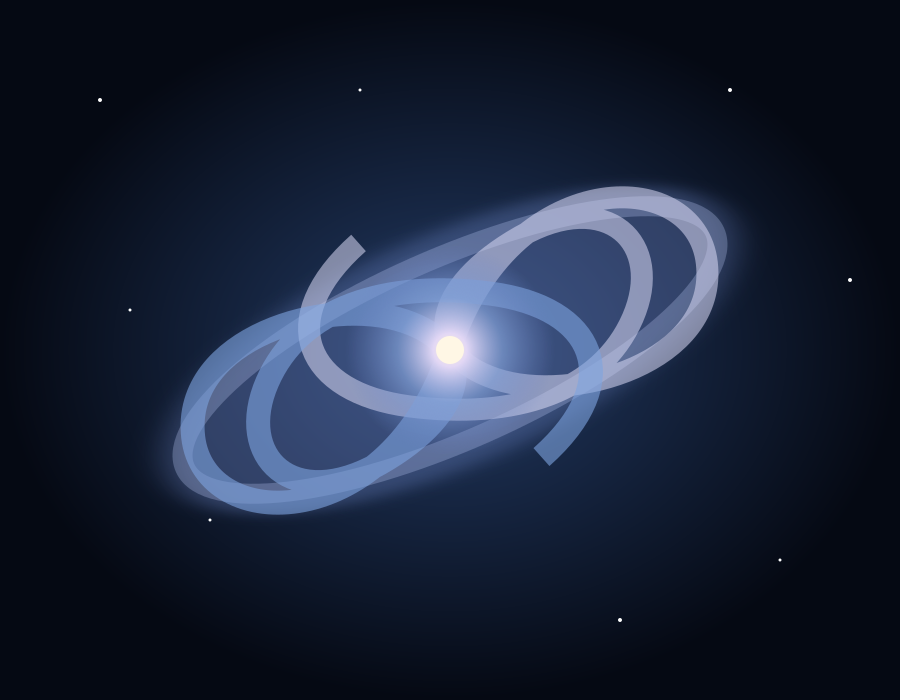

ASTRONUTS · IIIT DELHI
Space is out there.
Wonder starts here.
Astronuts is the astronomy club at IIIT Delhi, bringing students together around the stars, the science of space, and the joy of looking up.
See what we do
01THE CLUB
Big questions.
Shared wonder.
Astronomy can begin with a bright point in the sky and lead anywhere: to the scale of a galaxy, the orbit of a spacecraft, or the workings of a telescope.
Astronuts makes room for those questions on campus. Whether you are a seasoned sky-watcher or simply curious, there is always something new to notice.
FOLLOW YOUR CURIOSITY
Many ways to
look closer.
A glimpse at the activities and interests that bring the club's love of astronomy to life.